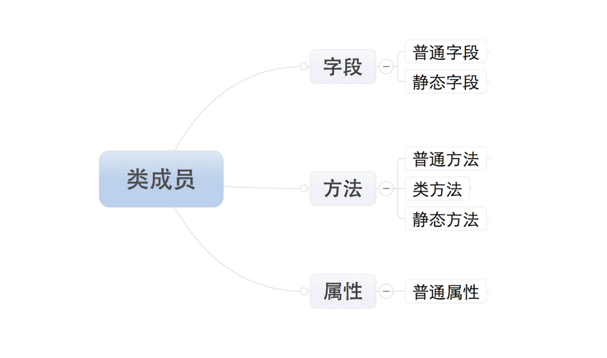
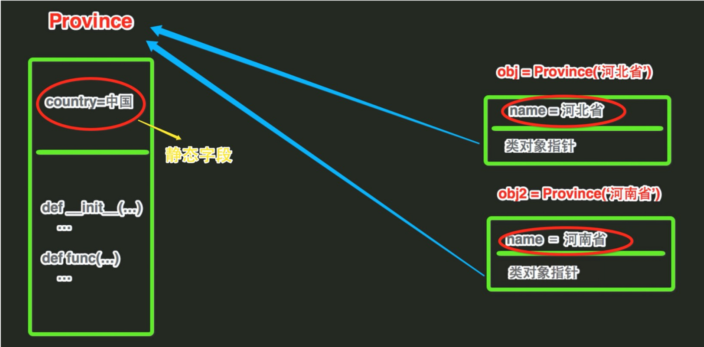

Contents
7.4. 一个基础有方法和属性的类¶
7.4.1. 类成员¶
类的成员可以分为三大类：字段、方法和属性 
- 字段
字段包括：
普通字段和静态字段，他们在定义和使用中有所区别，而最本质的区别是内存中保存的位置不同，
#!/usr/bin/env python
#-*- coding:utf8 -*-
class Province:
#静态字段
country = "中国"
def __init__(self,name):
#普通字段
self.name = name
#直接访问普通字段
hu = Province("hujianli")
print(hu.name)
#直接访问静态字段
print(Province.country)
 * 静态字段在内存中只保存一份 * 普通字段在每个对象中都要保存一份
7.4.2. 方法和属性¶
代码示例 1¶
#!/usr/bin/env python
#-*- coding:utf8 -*-
class Geese:
'''
大雁类
'''
neck = '脖子较长' #类属性
wing = '翅膀频率高'
leg = '腿位于身体的中心支点，行走自如'
def __init__(self): #定义构造方法
print('我是大雁类，我有以下特征：')
print(Geese.neck)
print(Geese.wing)
print(Geese.leg)
def fly(self, state): #飞行方法
print(state)
beak_1 = "喙的基部较高，长度和头的长度几乎相等"
wing_1 = "翅膀长而尖"
claw_1 = "爪子是噗状的"
# windGoose = Geese(beak_1, wing_1, claw_1)
# print()
# windGoose.fly("我飞行的时候，一会排成人字，一会排成一字")
print()
print("我的形态特征是：")
windGoose = Geese()
代码示例 2¶
#!/usr/bin/env python
#-*- coding:utf8 -*-
class Geese:
'''
大雁类
'''
neck = '脖子较长' #类属性
wing = '翅膀频率高'
leg = '腿位于身体的中心支点，行走自如'
number = 0
def __init__(self): #定义构造方法
Geese.number +=1
print('\n我是第{}只大雁类，我有以下特征：'.format(Geese.number))
print(Geese.neck)
print(Geese.wing)
print(Geese.leg)
def fly(self, state): #飞行方法
print(state)
list1 = []
for i in range(4):
list1.append(Geese())
print("一共有{}只大雁!".format(Geese.number)) #输出大雁的只数
Geese.beak = "这是添加的一个属性,属性名称beak."
print(list1[1].beak)